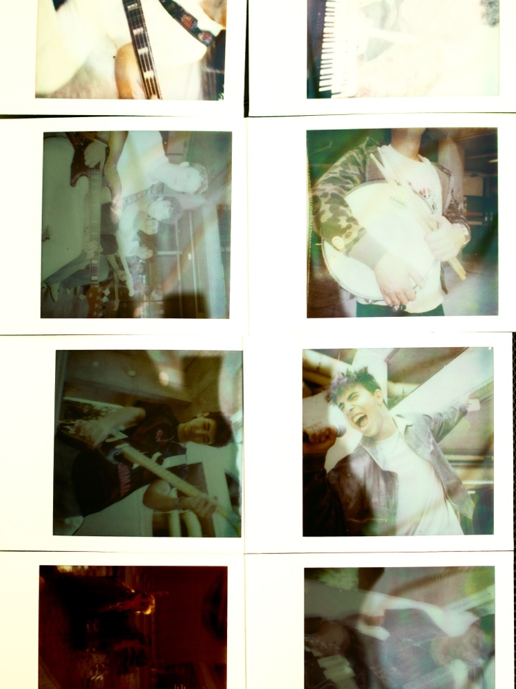
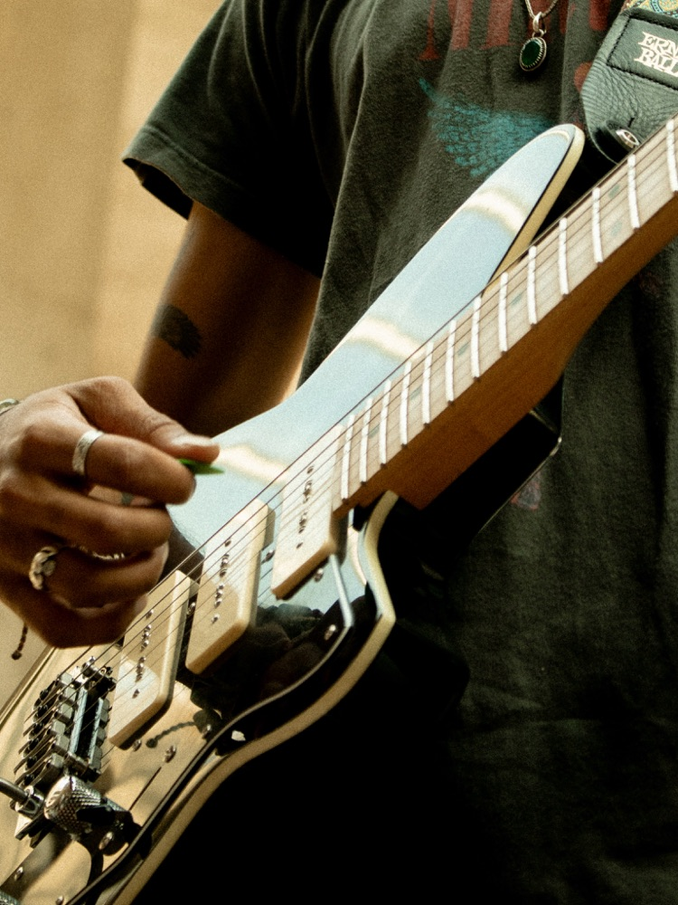
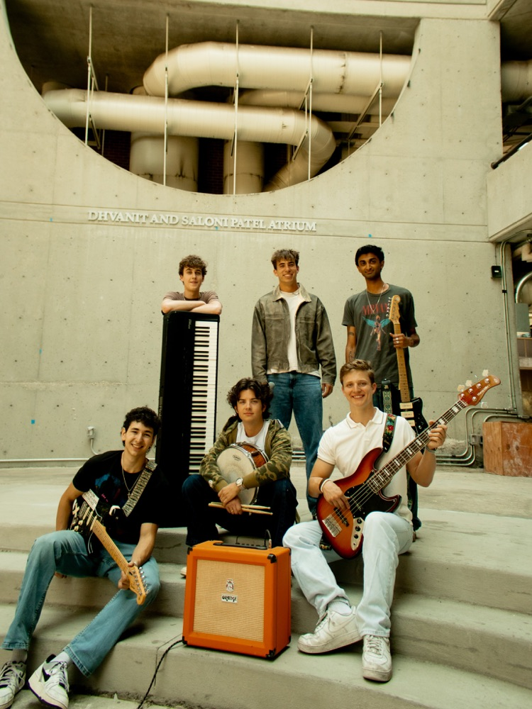
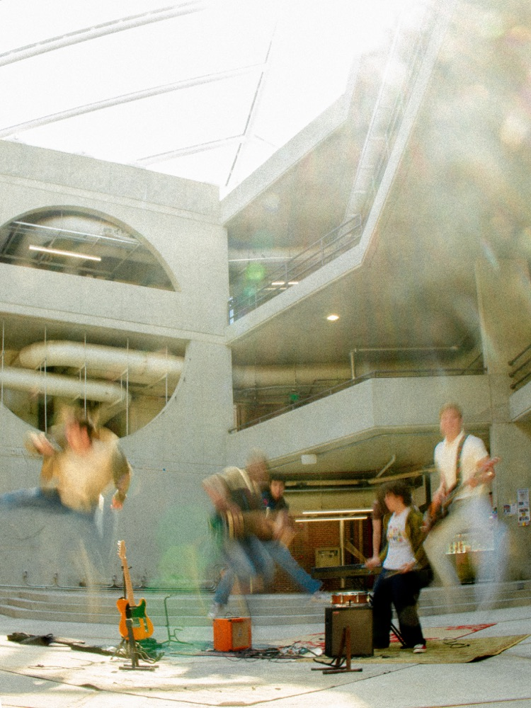

01Album cover · film + digital
Petty Theft
A trade for my 21st birthday · May 2026






- Idea
For my 21st birthday, all I wanted was live music. So I made the bands at my school an offer: play my party, and I’ll conceptualize and shoot your album cover.
- Look
The whole band laid out on mismatched rugs, shot from above, with gear and cables spilling between them. Instant film for raw color and light leaks; digital with motion blur and warm grain for energy.
Instant filmDigitalOverhead- Production
I pitched the trade, developed the concept, set the look and shot the film and digital cover session.
PitchConceptArt directionPhotography- Result
Petty Theft played an incredible set, and we came away with an album cover shoot I’m extremely proud of. See the set (May 8, 2026).